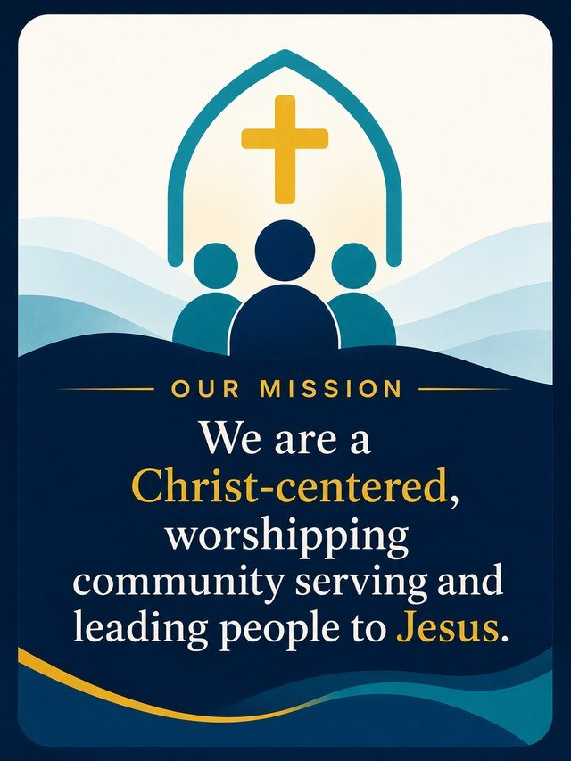
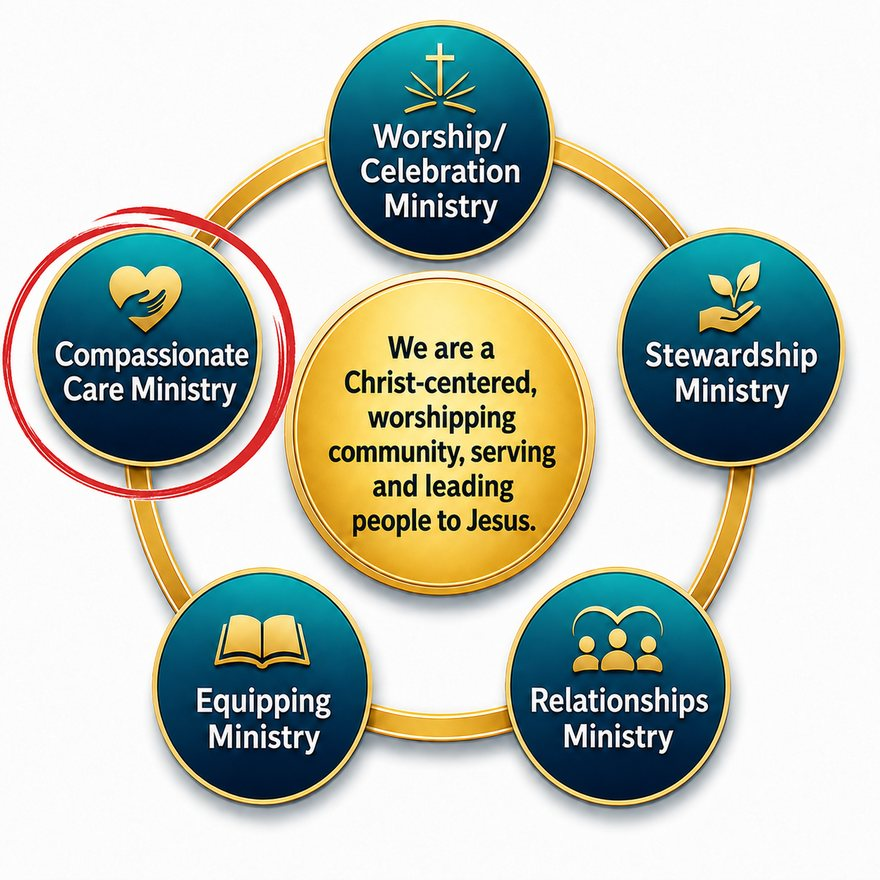
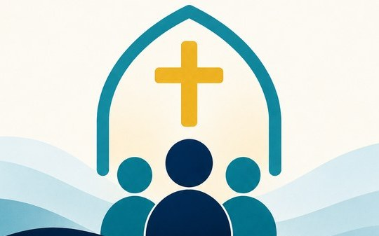

Branding, Main title
01-branding-cross-wings.png
St. Paul’s Church · Ingersoll
Colors, type, section styles, hero banners, icons and illustrations for the newsletter. One page to check before you build an issue.
Color
Use these ten colors only. Light text goes on navy; dark gold is for emphasis on light backgrounds.
Typography
Lora with Georgia as the email-safe fallback for headings. Inter with Arial as the fallback for body text.
Headings
Lora, Georgia, serifBody
Inter, Arial, sans-serifSection style
A small uppercase label, a large serif heading, a gold divider, then body copy with gold/bold emphasis on the phrases that help readers skim.
Our Mission
We are a Christ-centered, worshipping community that helps people serve, welcome, teach, prepare, and encourage.
St. Paul’s Ministry Spotlight
Headings are white, body text is light slate, and key phrases like Compassionate Care Ministry use light gold.
Hero banners
1100 × 367 px. Use the banner for the issue’s season.
st-pauls-spring-hero-1100px.png · 1100 × 367st-pauls-summer-hero-1100px.png · 1100 × 367st-pauls-fall-hero-1100px.png · 1100 × 367st-pauls-winter-hero-1100px.png · 1100 × 367Icons
Fifteen transparent PNGs, one primary role each. Use 88 px for the branding icon and 72 px for major section icons. Never reuse a retired icon or substitute emoji. The role map lives in brand/resources/icon-map-v4.json.
01-branding-cross-wings.png
02-pastoral-note-heart-dialogue.png
03-our-mission-church-community.png
04-ministry-spotlight-serving-heart.png
05-community-discernment-congregation.png
06-community-mission-cross-path.png
07-spiritual-formation-open-bible.png
08-stewardship-wheat-fields.png
09-upcoming-events-calendar.png
10-prayer-care-heart-hands.png
11-focus-on-finances-chart.png
12-thankful-heart-hands.png
13-announcements-bell.png
14-volunteer-community-care.png
15-worship-music-cross-notes.png
Illustrations
Use the copies in brand/assets/illustrations/email/ (full list: resources/links/st-pauls-illustrations-v1.md). Layouts for each shape: newsletter-system/gallery/.

email/our-mission-card-portrait-640x853.jpg
email/ministry-wheel-compassionate-care-square-880.jpg
email/our-mission-community-landscape-540x337.jpgemail/fall-2026-family-landscape-652x367.jpgemail/fall-2026-cross-square-367.jpg.png)
St. Paul’s Newsletter Mood Board(1).pngQuick rules
.../st-pauls-newsletter-assets/brand/assets/... URLs.